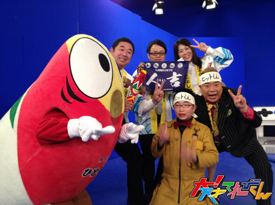
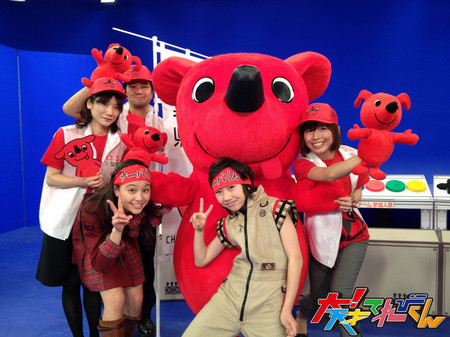
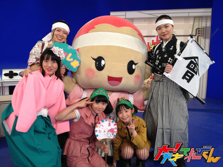
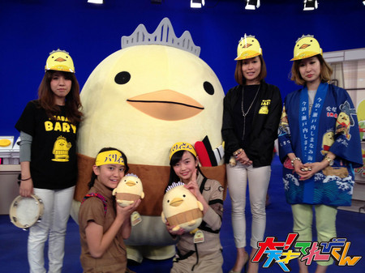

【大！木曜LIVE】激闘！カテゴリング「好きなゆるキャラ」編
ゆるキャラの名付け親・みうらじゅんさんオススメのキャラクターが地元の皆さんと一緒に来てくれました。ゲームはたいへん盛り上がり、見事「チーバくん」チームが優勝。データ放送での参加者は、過去最高の80142人を記録しました。

熊本県人吉市からやって来た「ヒットくん」。応援団は人吉温泉観光協会と熊本県東京事務局の皆さんです。人吉球磨の郷土玩具「きじ馬」をモチーフに作られました。

千葉県からやって来た「チーバくん」。応援団は千葉県庁の皆さんです。正面からでは分かりませんが、横から見ると千葉県の形になっています。

福島県からやって来た「八重たん」。応援団はふくしま八重隊の皆さん。大河ドラマ「八重の桜」の主人公・新島八重がモデルです。

愛媛県今治市からやって来た「バリィさん」。応援団はバリィさんのママたちです。頭の王冠は来島海峡大橋、腹巻に刺さっている船はお財布だそうです。
「激闘！カテゴリング」は毎月1回放送します。皆さんも是非、リモコン片手にゲームを楽しんでください。
テレビをインターネットに接続する方法はこちらから。
「NHKネットにつなごう！ホームページ」 http://www.nhk.or.jp/tsunagou/
また、「激闘！カテゴリング」から生まれたゲーム「ぐらぐらブロックタワー」が番組HPでも楽しめるようになりました。 http://www.nhk.or.jp/tvkun/ から、3体のアバターが肩車しているアイコンをクリック！
投稿者:大天才テレビジョン音楽制作部 | 投稿時間:21時30分 | カテゴリ：大！木曜LIVE | 固定リンク


 " title="ソーシャルブックマークについて">
" title="ソーシャルブックマークについて">
※NHKサイトを離れます。